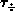
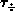
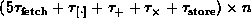

Data Structures and Algorithms
with Object-Oriented Design Patterns in Java
Data Structures and Algorithms
with Object-Oriented Design Patterns in Java
The previous chapter presents a detailed model of the computer
which involves a number of different timing parameters--  , ,
, ,  ,
,  ,
,  , ,
, ,
 , ,
, ,  ,
,  , and
, and  .
We show that keeping track of the details is messy and tiresome.
So we simplify the model by measuring time in clock cycles,
and by assuming that each of the parameters is equal to one cycle.
Nevertheless, keeping track of and carefully counting all the cycles
is still a tedious task.
.
We show that keeping track of the details is messy and tiresome.
So we simplify the model by measuring time in clock cycles,
and by assuming that each of the parameters is equal to one cycle.
Nevertheless, keeping track of and carefully counting all the cycles
is still a tedious task.
In this chapter we introduce the notion of asymptotic bounds, principally big oh, and examine the properties of such bounds. As it turns out, the rules for computing and manipulating big oh expressions greatly simplify the analysis of the running time of a program when all we are interested in is its asymptotic behavior.
For example,
consider the analysis of the running time of Program  ,
which is just Program again,
an algorithm to evaluate a polynomial using Horner's rule.
,
which is just Program again,
an algorithm to evaluate a polynomial using Horner's rule.
| statement | detailed model | simple | big oh |
| model | |||
| 5 | | 5 | O(1) |
| 6a | | 4 | O(1) |
| 6b | | 3n+3 | O(n) |
| 6c | | 4n | O(n) |
| 7 |  | 9n | O(n) |
| 8 | | 2 | O(1) |
| TOTAL | 16n+14 | O(n) | |
| |
Table shows the running time analysis
of Program done in three ways--a detailed analysis, a simplified analysis, and an asymptotic analysis.
In particular, note that all three methods of analysis are in agreement:
Lines 5, 6a, and 8 execute in a constant amount of time;
6b, 6c, and 7 execute in an amount of time which is proportional to n,
plus a constant.
The most important observation to make is that, regardless of what the actual constants are, the asymptotic analysis always produces the same answer! Since the result does not depend upon the values of the constants, the asymptotic bound tells us something fundamental about the running time of the algorithm. And this fundamental result does not depend upon the characteristics of the computer and compiler actually used to execute the program!
Of course, you don't get something for nothing.
While the asymptotic analysis may be significantly easier to do,
all that we get is an upper bound on the running time of the algorithm.
In particular, we know nothing about the actual running time
of a particular program.
(Recall Fallacies and ).
 Copyright © 1998 by Bruno R. Preiss, P.Eng. All rights reserved.
Copyright © 1998 by Bruno R. Preiss, P.Eng. All rights reserved.